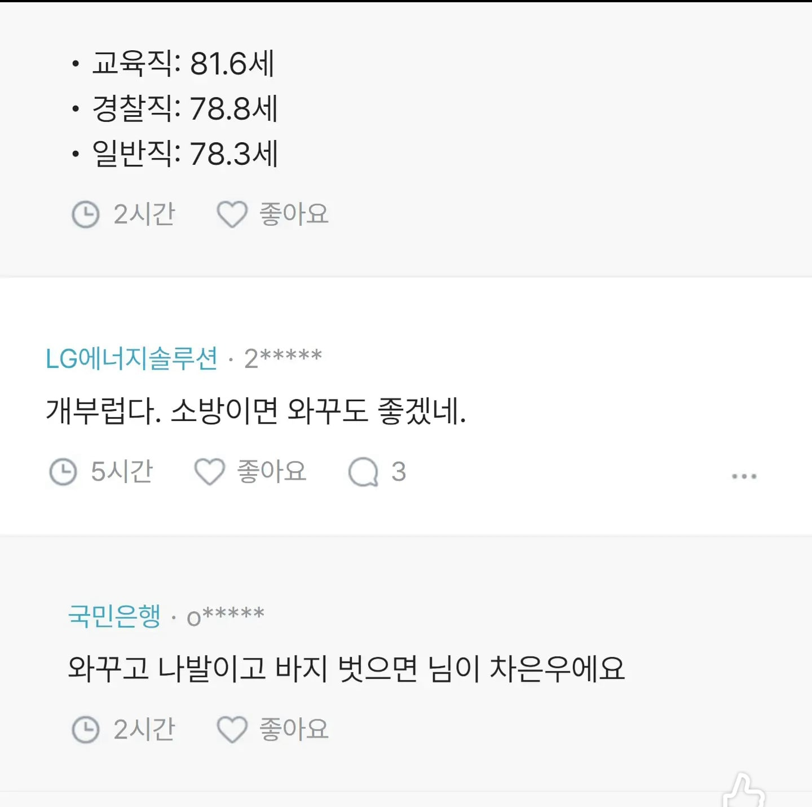

105 · 7 · 3 시간 전 · 원문

역시 공무원은 어린나이에 붙는게 최고
돈은 좀더 더줘도 된다고봄
수집 당시 댓글 7개
뜌따이 · 2 시간 전
난 소방관들 일 없을때 쉰다는거 볼때마다 안심되더라
오이쉬 · 1 시간 전
사고없이 건강하게 정년까지 일하면 좋겠네
밴당한선동가 · 1 시간 전
30에 영끌 7천이면 적긴하네
↳ 답글 · 도롱롱 · 1 시간 전
30이면 많지
일단됩니다 · 1 시간 전
소방관이 놀아야 좋은거지 점검, 예방작업만하고
무메이하트콘 · 40 분 전
친구 보니까 소방은 점바점 심함 깡촌같은데 아니면 시도때도없이 나가야됨
tima · 22 분 전
군경소방은 놀수있어야 좋은거지


난 소방관들 일 없을때 쉰다는거 볼때마다 안심되더라